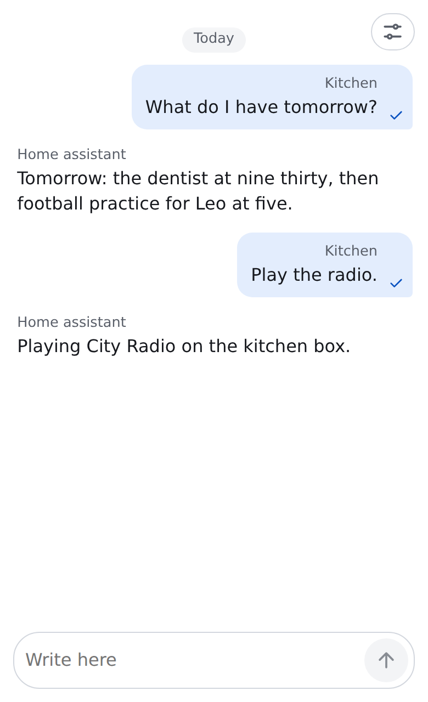

Feature
Talk to your AI from any room
Voice boxes: a small box in a room. Say its word, talk. It answers aloud.

You speak→Voice box→Your server→Your agent→Spoken answer
- Wakes on its word, or a press of its button.
- Hears a whole sentence, even with the TV on.
- Answers aloud. Plays radio, podcasts and stories.
It keeps its last 10 sentences for a week, on your server. Its lights say what it does, and dim at night.
How
- Put its free software on the box, once.
- Connect it to your Wi-Fi and your server.
- Talk.
Limits
- Its wake word is French today: "Mésange".
- What you say goes to your dictation and AI providers.
Questions
Which hardware?
A Waveshare ESP32-S3 audio board. The firmware is MIT.
Does it record?
It keeps its last 10 sentences for a week, on your server. It records a meeting only when started from the box.
Only with Clavarium?
Its protocol is open: any server that speaks it can use the box.